2
Launch Techstream. Once it opens, take a screen capture of the main screen, which shows the software version and the remaining subscription time in the lower left, and the selected VIM in the status bar along the bottom.

Confirm that the vehicle's battery, ground cables, and positive 12-volt cables are properly connected and undamaged. Inspect the airbag ECU and its wiring, and the DLC itself, for crash damage that may complicate or corrupt a retrieval.
Photograph the vehicle, the VIN plate, the odometer, and the DLC before you connect anything. Record the date and time from your own watch alongside the laptop clock: Techstream timestamps the retrieval file from the PC clock, and VCH records carry their own clock reference that must be reconciled later.
Toyota provides no direct-to-module connection for Vehicle Control History. The retrieval must be made through the vehicle's 16-pin Diagnostic Link Connector (DLC), normally under the dash on the driver's side. The VCH data itself is held in the airbag ECU, which Toyota calls the Airbag Electronic Control Unit.
Because the retrieval runs through the DLC, the module must stay powered for the whole read. Where vehicle power is unavailable or unreliable, the module can be backpowered through the DLC in the same way as a CDR download. A read-out can take anywhere from one to ninety minutes, so provide a booster or supply battery rather than relying on a damaged vehicle's own battery.
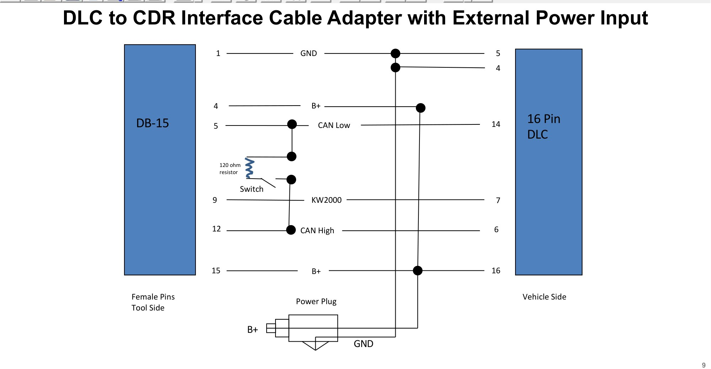
Vehicle Control History is a separate recording from the airbag EDR record read by the Bosch CDR tool. Retrieving one is not a substitute for retrieving the other.
A CDR download alone may miss data that VCH holds. VCH records post-trigger data as well as pre-trigger, which makes it valuable in non-deployment events, multiple impacts, and sideswipes that the CDR report does not capture.
VCH includes the familiar parameters — vehicle speed, engine RPM, accelerator position, brake switch — and adds yaw rate, lateral and longitudinal G sensor signals, brake oil pressure, steering angle, shift position, and the ADAS system parameters. Events may also carry forward-facing camera images.
At least 26 separate trigger types cause an event record to be written. Some events record at 2 Hz and others at 6.67 Hz; most triggers capture roughly five seconds before and after the trigger. The authoritative trigger list is in the Vehicle Control History section of the online service manual at techinfo.toyota.com, which requires a subscription.
Vehicle Control History was introduced progressively:
The generation of Toyota Safety Sense on the vehicle changes what images you can recover and how many boxes appear on the image-selection screen.
VCH records are overwritten. Events are sorted into recording “Areas,” and each Area holds a limited number of records before the oldest is replaced — the pre-collision Area holds about ten records, the lane-departure Area about twelve. Because of the overwrite rules the file numbers are not necessarily chronological.
Every key cycle risks losing data. Retrieve VCH as early in the inspection as practical, and do not drive or repeatedly cycle the vehicle beforehand.
Techstream runs on a subscription from techinfo.toyota.com. Register at techinfo.snapon.com/TIS/Register.aspx if you do not already have an account.
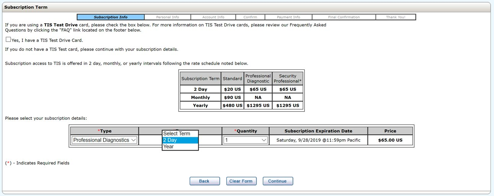
Activation is not automatic. TIS emails an activation link with “Action Required” in the subject line, and the subscription stays inactive until you click it. That email frequently lands in a spam folder — check there before assuming the order failed.
Log in, accept the terms of use, and download the current Full Techstream installer from the TIS tab under Diagnostics. Save the installer rather than running it directly so a reinstall is possible later. Select English (United States) and let the installer run; it takes a while. Set the region to North America and the user type to Public User, completing every field on that screen. If prompted about Java, install it.
On first launch Techstream asks for a registration key. Click Software Registration, log in, enter a Computer Name and Shop Owner, click Calculate Key, then copy the key back into the New Key field and click OK.
The Techstream main screen shows the software version and the remaining subscription time in the lower left. Confirm it reads the expected term before you leave for the inspection.
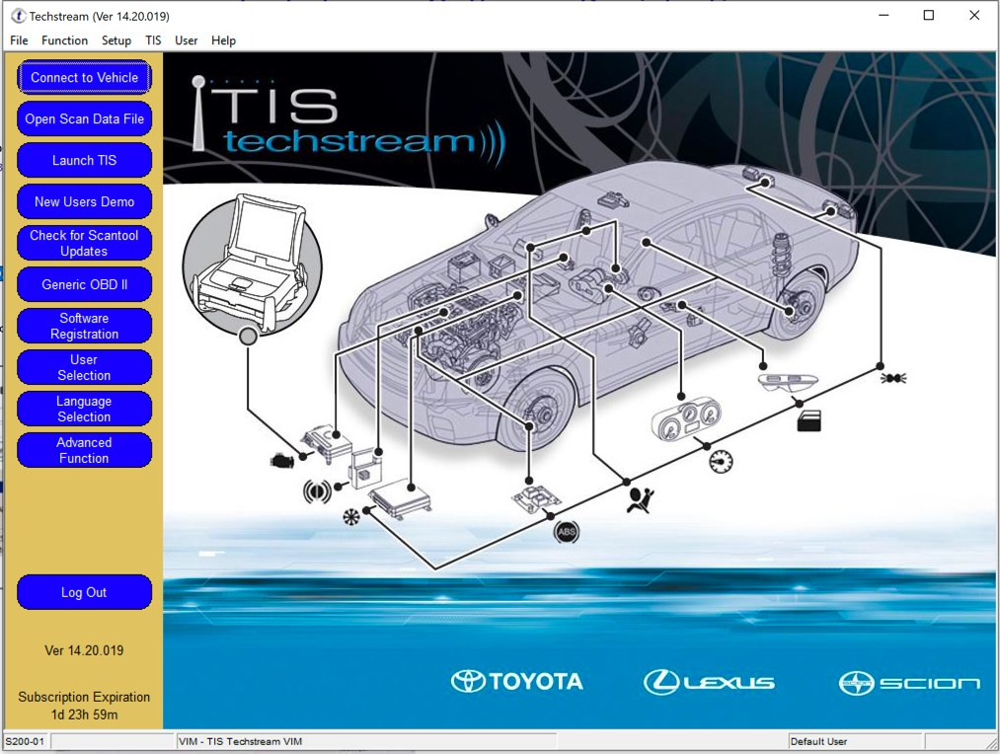
PCS Data Viewer is the application that opens the retrieval file. It installs alongside Techstream, in the Techstream program folder. Confirm it is present and, if there is no desktop shortcut, create one before you go.
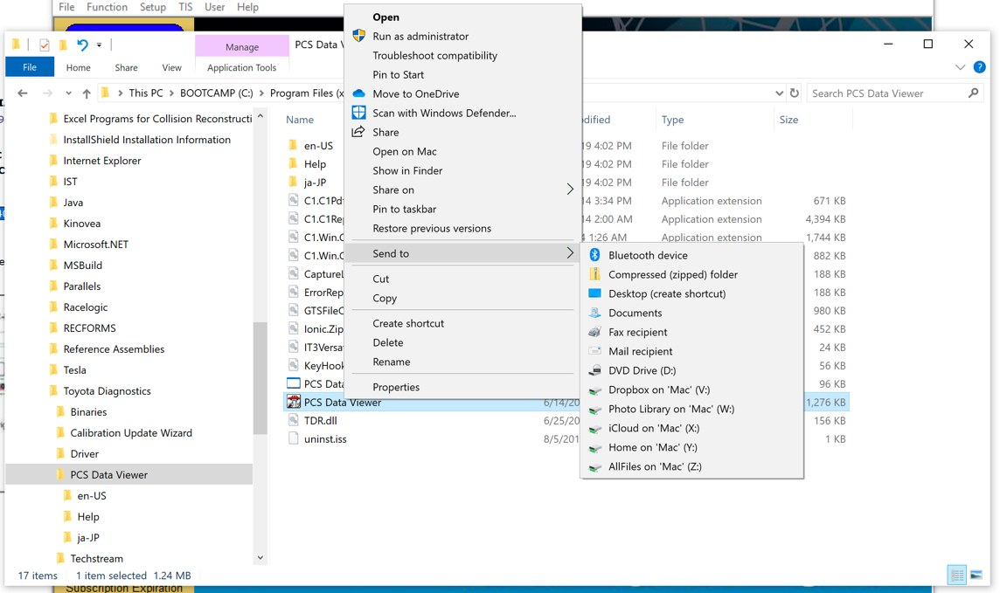
The same subscription gives access to service manuals and the vehicle's factory “as-built” equipment record. Entering the VIN under the Vehicle Inquiry tab and expanding Standard Equipment tells you what safety systems the vehicle actually left the factory with — useful for knowing what to expect before you connect, and printable for the file.
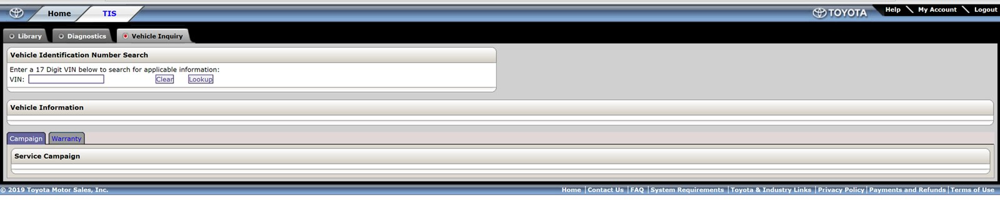
Screen-capture every screen listed below as you go. The screen captures are the record of how the retrieval was performed and of the tool state at the time; they cannot be recreated later.
Verify system power by checking for 12 volts at the vehicle's battery. Turn the ignition ON — do not start the engine. Connect the VIM to the DLC and to the laptop, and confirm the laptop is booted and stable before opening Techstream.
Launch Techstream. Once it opens, take a screen capture of the main screen, which shows the software version and the remaining subscription time in the lower left, and the selected VIM in the status bar along the bottom.
Click Setup, then VIM Select.
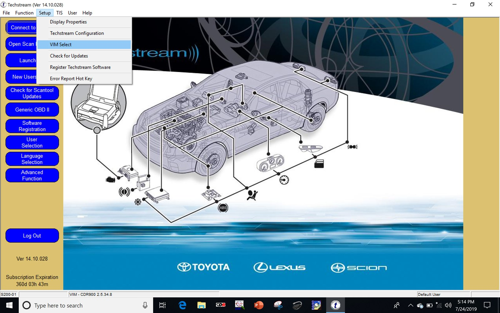
Choose the interface you are using from the Interface setup list — several may be listed — and click OK. Take a screen capture showing the device selected and its reported vendor, device name and supported protocols.

Click Connect to Vehicle on the left of the main screen. Confirm the ignition is still ON. The Vehicle Connection Wizard reports its progress as it connects.
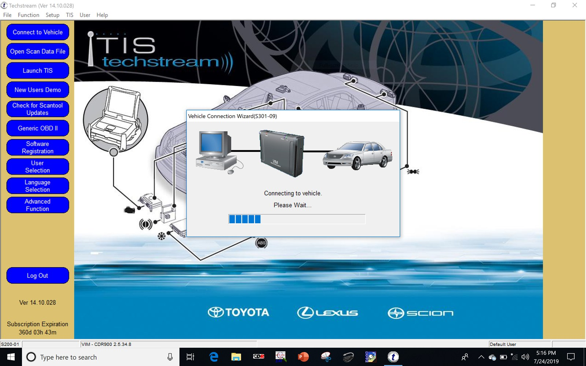
Techstream normally auto-detects the vehicle and populates the VIN. Confirm Division, Model, Model Year and Engine, set any options the vehicle carries (Smart Key, Radar Cruise), add a note in the Memo field identifying the case, and click Next. Screen-capture this screen — it is your record that the tool was connected to this VIN.

The System Selection Menu appears. Yellow cells are possible equipment whose status is unknown; running Health Check performs a bus scan and turns the ECUs that actually responded white. Run the Health Check, save or print its report, and screen-capture the System Selection Menu as your record of the ECU inventory on this vehicle.

Select SRS Airbag (wording varies by vehicle) and click Trouble Codes. Record the current, pending and history codes — save them with the disk icon at the lower right and take a screen capture.

Click Data List for the additional airbag-system information — occupant classification, buckle switches, number of past DTCs. Save and capture this screen as well.
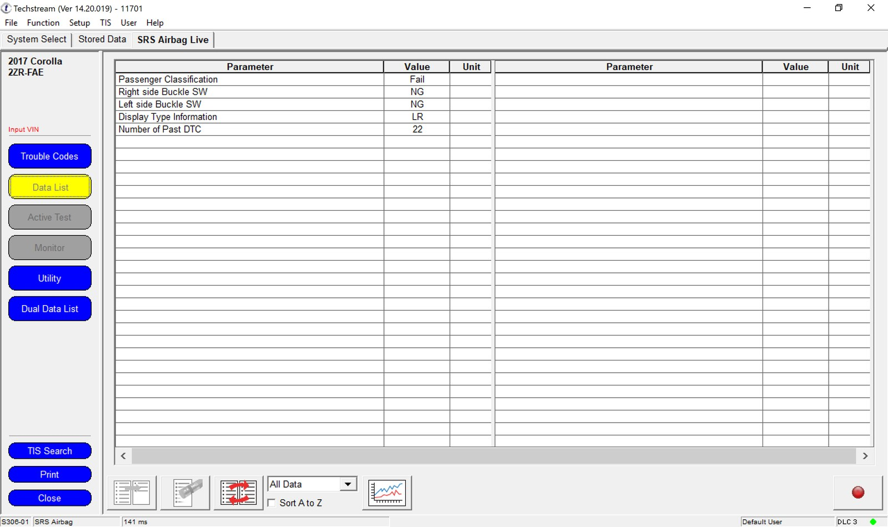
Return to the System Select tab and click Read Data Function. Two paths are offered. Choose PCS FFD Retrieval.

A legal notice appears. Some states require the owner's written consent before Vehicle Control History data is downloaded or interpreted. Satisfy yourself that you have the authority to proceed, tick the OK checkbox, and click Next. Screen-capture this screen.

Select Read data and click Next.

Techstream confirms it is about to read out the Image Data, Operation FFD and Vehicle Control History, and warns that the read may take between one and ninety minutes. Confirm your power supply will last, then click Next.

Select the image data to read, and check every box offered. A TSS 1.0 vehicle offers only PCS related Image data; a TSS 2.0 vehicle offers five categories. There is no reason to leave any unchecked. Screen-capture this screen — it records which categories were requested. Click Next.

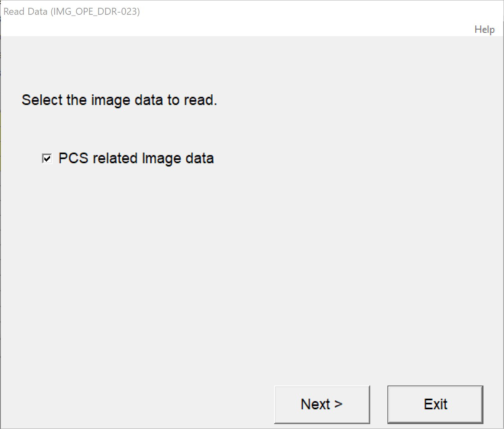
Techstream estimates the read time from the number of stored events. Confirm the estimate against your power supply and available time, then click Next to begin the read. Do not disturb the laptop or the connection while it runs.

When the read completes, Techstream reports the status of each of the three data sets and names the file it created. Screen-capture this screen. It is the single most important capture of the retrieval — it is your record of the file name and of whether each data set succeeded.
Read the three status lines carefully. Image data : N/A means no images were stored for the events retrieved, which is a finding in itself — not a failure of the retrieval.

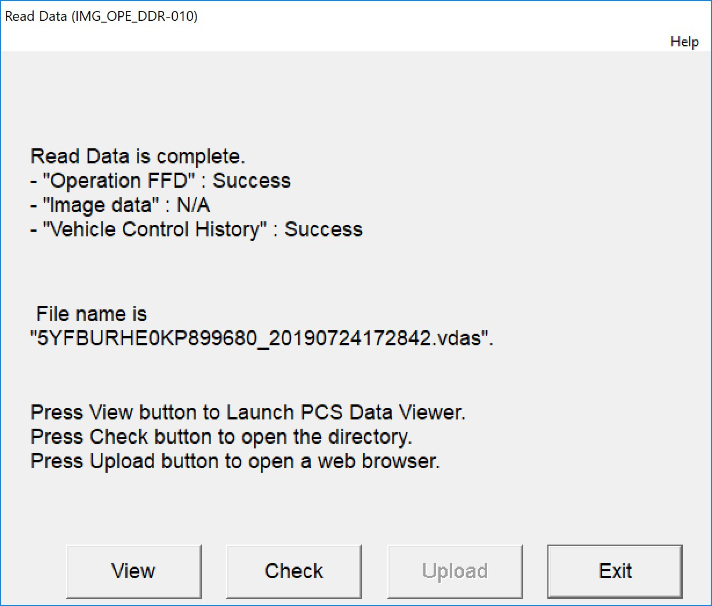
Click Check. Windows Explorer opens at the folder holding the retrieval file, by default C:\Users\Public\Public Documents\Techstream\PCSdata\. Confirm the .vdas file is present and note the full path.

While still on scene and still licensed, you may review the events in Techstream itself: the Stored Data tab lists the Vehicle Control History with key cycle, elapsed time, date and time, trigger description, odometer and overwrite count. A circle in the Image column marks an event that has camera images. Identify the events relevant to your investigation and note their key cycles.

Opening an individual event shows the recorded parameters for that trigger and a trigger note. The playback controls step through each data point. Use the disk icon to export the event to Excel.

Copy the .vdas file and every screen capture to external media before you disconnect. Work through Table 1 opposite and confirm each item is in hand. When everything is accounted for, exit Techstream, disconnect the VIM from the DLC, and turn the ignition off.
At this point the following should have been imaged from the vehicle. Do not disconnect until every row is accounted for. Where a row is marked not applicable, record why in your notes rather than leaving it blank.
| No. | File | Location | Save Method |
|---|---|---|---|
| 1 | Software version and subscription expiration | Techstream main screen at launch | Screen capture |
| 2 | Interface (VIM) selection and protocols | Setup → VIM Select | Screen capture |
| 3 | Vehicle identification and VIN | Vehicle Connection Wizard | Screen capture |
| 4 | ECU inventory / System Selection Menu | System Select tab | Screen capture |
| 5 | Health Check report | System Select → Health Check | Save / print to PDF |
| 6 | SRS Airbag diagnostic trouble codes | SRS Airbag → Trouble Codes | Save (disk icon) + screen capture |
| 7 | SRS Airbag data list | SRS Airbag → Data List | Save (disk icon) + screen capture |
| 8 | Consent / legal notice as acknowledged | Read Data (IMG_OPE_DDR-009) | Screen capture |
| 9 | Image data categories requested | Read Data image selection screen | Screen capture |
| 10 | Read-out estimated time | Read Data (IMG_OPE_DDR-021) | Screen capture |
| 11 | Read Data complete summary — status of Operation FFD, Image data and Vehicle Control History, plus the retrieval file name | Read Data (IMG_OPE_DDR-010) | Screen capture |
| 12 | Retrieval file VIN_YYYYMMDDHHMMSS.vdas | C:\Users\Public\Public Documents\Techstream\PCSdata\ | Copy to external media |
| 13 | Vehicle Control History event list | Stored Data → Vehicle Control History | Export (disk icon) to Excel + screen capture |
| 14 | Individual trigger event data, for each event relevant to the investigation | VCH list → event → disk icon | Export to Excel + screen capture |
| 15 | Photographs of vehicle, VIN plate, odometer and DLC; laptop clock vs. actual time | Scene | Camera / notes |
| 16 | Vehicle as-built equipment record (optional, from TIS) | techinfo.toyota.com → Vehicle Inquiry | Print to PDF |
Complete this part while the TIS subscription is still active. Once it expires, the .vdas file can no longer be opened.
Launch PCS Data Viewer from the desktop shortcut. Click File → Load VDAS File and open the retrieval file. The header fills in with the VIN, key cycle, odometer, retrieval date, dealer code and the airbag ECU part number and software number.
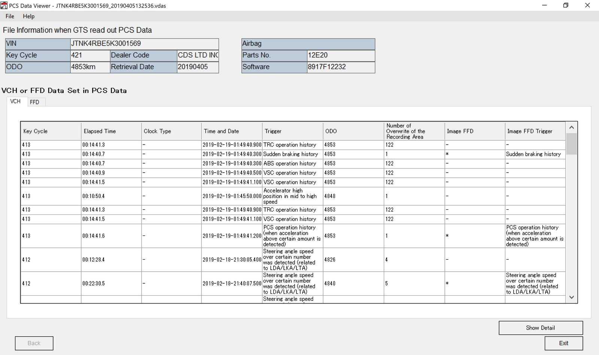
Work the VCH tab. Each row is one trigger event: key cycle, elapsed time, clock type, time and date, trigger description, odometer, overwrite count, and whether an Image FFD record exists. An asterisk in the Image FFD column marks an event with camera images.
Work the FFD tab in the same way. VCH and FFD views of the same event contain overlapping but not identical data — review both.
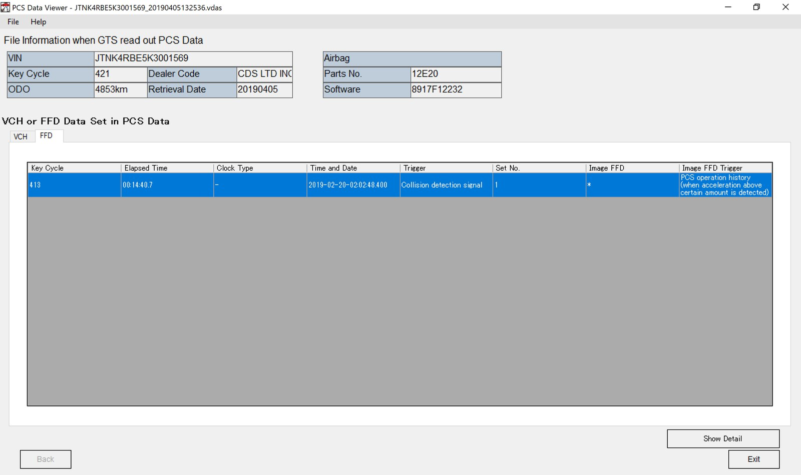
Double-click an event to open playback. Selected parameters are graphed against time with the trigger at zero. Where the event carries images, they load alongside the graphs and step in sync with the playback controls.
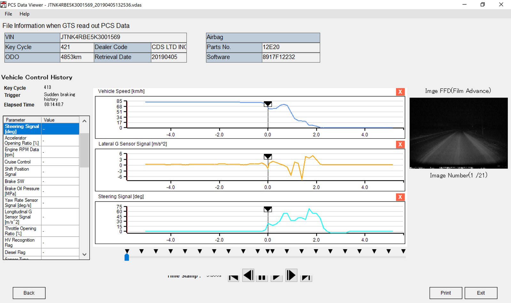
Click File → Output PCS Data and choose a destination. Save the output alongside the .vdas file so the retrieval and its extraction stay together.
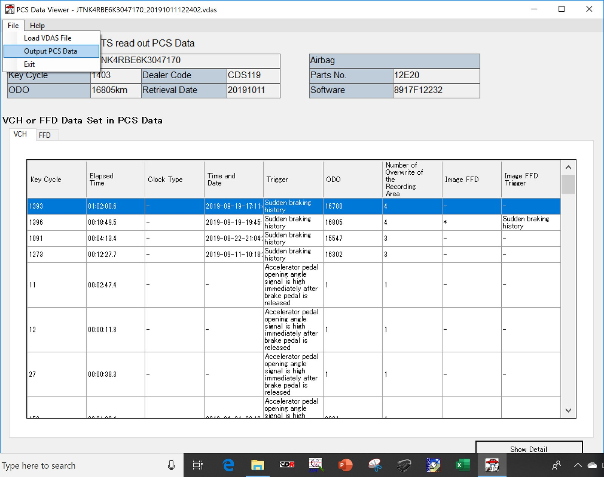
The output is written into three directories plus two files: ImageFFD, OperationFFD and VCH, with CarAndCommonInfo holding the vehicle and tool data and Result recording the output run. Confirm all five are present.
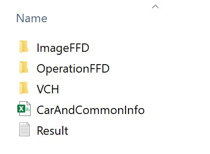
On a TSS 2.0 vehicle the image output is split by trigger type into separate folders. Images may be duplicated across folders where triggers occurred concurrently — that is expected, not an error. Each category holds one to three sets of images, and each set is accompanied by a Setx CSV file linking the images to the data.
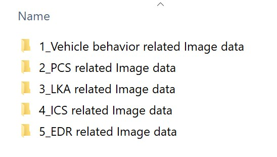
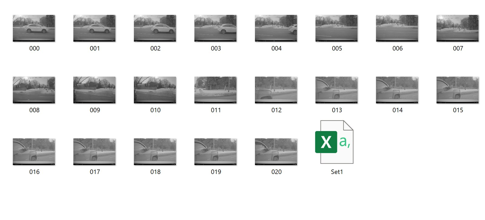
Finally, produce a printed report. Click Print, select the parameters to include — Select All unless you have a reason not to — and click Output. Choose a destination and save as PDF. Any images are printed at the bottom of the report. You do not need anything loaded in the viewing area to print.
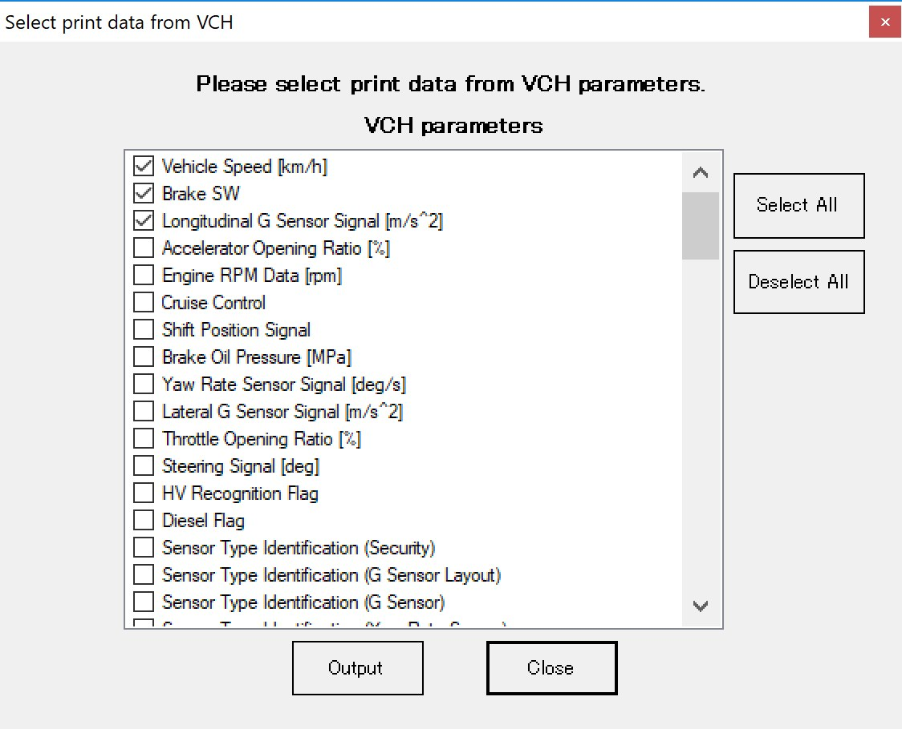
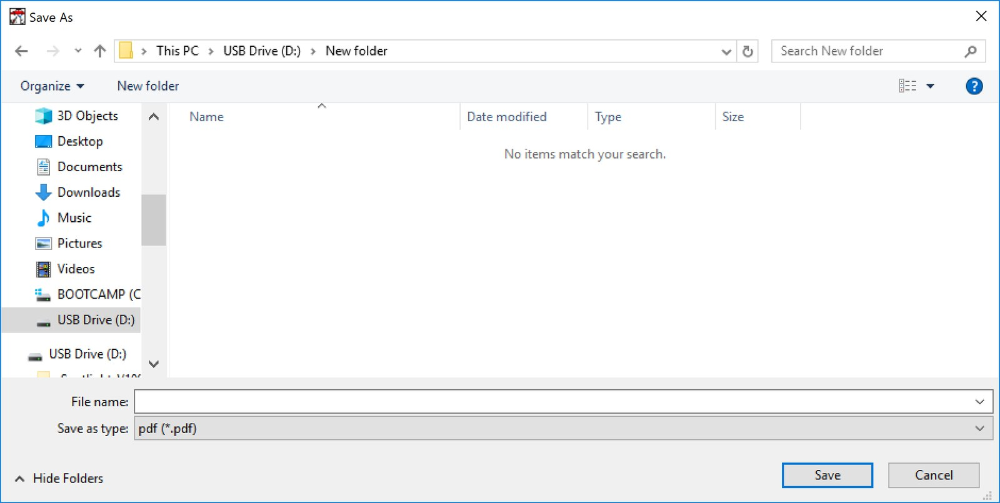
Preserve the output below together with the original .vdas file. The CSV and image files remain readable after the subscription expires; the .vdas file does not.
| No. | File | Location | Save Method |
|---|---|---|---|
| 1 | Vehicle Control History event data, one CSV per Area | VCH\ | File → Output PCS Data |
| 2 | Operation Freeze Frame Data, one CSV per event | OperationFFD\ | File → Output PCS Data |
| 3 | Forward-facing camera images, by trigger category | ImageFFD\1_Vehicle behavior…5_EDR\ | File → Output PCS Data |
| 4 | Image set index files linking images to event data | ImageFFD\…\Setx | File → Output PCS Data |
| 5 | Vehicle and tool information | CarAndCommonInfo | File → Output PCS Data |
| 6 | Output result record | Result | File → Output PCS Data |
| 7 | Printed VCH / FFD report, images included | PCS Data Viewer → Print → Output | Save as PDF |
| 8 | Screen captures of the viewer showing each relevant event | PCS Data Viewer | Screen capture |
VCH events are sorted into recording Areas, each with its own overwrite rules and record capacity. Four Areas commonly relate to an EDR record:
A single retrieval can produce an Excel file with 300 or more data columns for each timestamp. Budget analysis time accordingly.
This guide is a procedural compilation. The screenshots and the underlying procedure are the work of the authors below, and the guide should be read alongside their original material rather than in place of it.
Format modelled on the Cummins PowerSpec and Insite imaging guides by Cheek, Steiner, Plant and Austin.